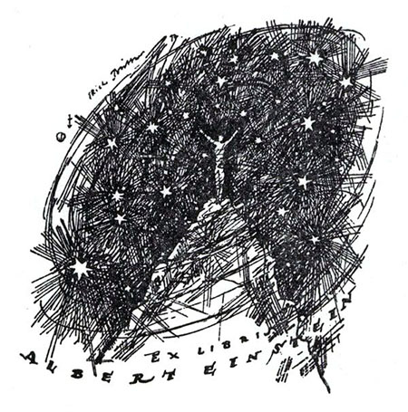
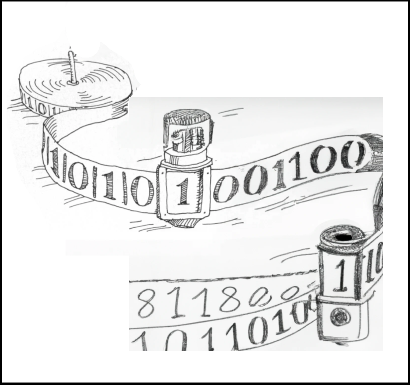

Ramblings |
A Blog By Aidan Evans |
I made my own bookplate (using AI)
Post 2 | December 28, 2022

Bookplates are like stamps put on the inside covers of books in order to identify the owner. They started primarily in monasteries in the 15th and 16th centuries and were quite popular amongst personal libraries until the 1950s. They were used to personalize an individual's book collection and to encourage borrowers to return the book to its owner. With my collection of books growing, I decided to make my own bookplate. To do so, I used a combination of AI (specifically DALL-E) and hand editting. In this post, I explain what bookplates are and how I made my own using AI.
Introduction
Admittedly, I am quite apathetic when it comes to machine learning and artificial intelligence in the news. Now, I have studied deep learning in the past, used ML APIs in code for a variety of reasons over the years, and have recently started taking a at look computational learning theory but I think that the news more often than not re-hypes the same ideas or simply reports on different applications of the same underlying theory. For example, I remember that there was hype about large language models and transformers when GPT-2 was released; months later, there was hype when GPT-3 was released; and again, today, significant hype about ChatGPT. Don't get me wrong: these are freaking cool applications of computer science and worthy of research but GPT-3 and ChatGPT, for example, just feel like the sequels to GPT-2 that we all saw coming. In theory, we knew the underlying framework used for GPT-2 could be extended; it was just a matter of putting in the work and resources to do it. In other words, of course people are going to keep making larger and more advanced versions of this. The same happened with image generation from when DALL-E 2 was released, i.e., a re-hype of the first DALL-E. With all that said, when I actually have a reason to use these models (beyond just, "let's see what it can do"), the apathy goes away a little bit --- like it did a few days ago.
For Christmas, I had bought myself four books and I had recently acquired a few more books in the months prior. A majority of the books I had purchased were used because they are and have been out of print. The publication dates of these books range from the late 1960s to the early 1990s. Because many of these books are niche and a bit old (e.g., Algebraic Theory of Machines, Languages, and Semi-groups, 1968), part of me was curious who had owned them previously. What was the story behind these books? Another out of print, used book I had purchased a couple years prior had what's called a bookstamp on it: an ink stamp placed typically on the inside cover of a book to indicate ownership. Beyond simply indicating who owned a book previously, a bookstamp is helpful for a few reasons. First, they encourage borrowers to return it to you; anyone who has ever lent a book knows that, in many cases, you aren't always guaranteed to get the book back promptly (if at all) without asking for it back. Second, if you ever misplace a book and someone else finds it, they know who to return it to. Additionally, it's simply a nice way to personalize a book and make it feel more like your own. All of these reasons were appealing to me, mostly because the books I had been acquiring were getting older and more expensive to replace if they had ever become lost. Textbooks are expensive. Thus, I stared looking into making my own bookstamp.
While researching bookstamps, I had come across bookplates. Bookplates are basically stickers adhered to the inside cover or front matter of a book for the same reason bookstamps are. They differ from bookstamps in that they damage the book less (i.e., unlike bookstamps, bookplates can technically be removed) and that they tend to have fancier designs. In fact, libraries started to use bookstamps as opposed to bookplates in order to purposely depreciate the value of their books in order to discourage people from stealing and then reselling them. In the end, I liked the idea of bookplates more than bookstamps so I switched gears and started looking into making my own bookplate.
What Are Bookplates?
A bookplate is also known as an ex libris. "Ex libris" is Latin for "from the library of" and is the typical inscription written on bookplates in addition to the owner's name. Bookplates will also sometimes have a motto favored by the owner. Almost all bookplates include a sort of personalized design; historically, this design has commonly been a family crest or simply a design capturing who the owner is. For example, many authors will tend to have their bookplates contain an allusion to one of their works. Whatever the bookplate contains, it is meant to be a sort of signature, a personalization of the owner.
For example, below are two of my favorite bookplates which I have come across. These are from the authors H. P. Lovecraft (left) and H. G. Wells (right):
Another favorite of mine is Albert Einstein's:

Using DALL-E to Make A Bookplate
Given my obsession with complexity and computability theory, I wanted my bookplate to feature a Turing machine. I had been particularly fond of the following illustration and wanted my bookplate to feature a design of its style:
Instead of manually taking the time to draw an extension of this illustration myself, I decided to have some help from DALL-E. DALL-E is an AI system which can generate images from text descriptions. It was released by OpenAI in 2020. Happily, you can generate the image on OpenAI's website itself. Moreover, not only can you generate images from text but you can also have DALL-E fill in missing portions of images, while still guiding it using a text description.
I first tried to generate what I wanted simply from the following text description: "a simple sketch of a turing machine reading a tape reel with the tape reel stretched out so we can see the symbols". After a few tries, I got the image presented below on the left. This was unsatisfactory and I realized that I wasn't going to get a satisfactory image that way so I decided to use the online editor to edit the Turing machine illustration above and fill in the missing portions; I started with the image presented on the right below.
From the starting image, I would then instruct the system to fill in the selected section of the image with, "tape of the machine continuing to unwind" among other instructions sometimes as well. I got a wide range of results; the two closest to what I wanted are presented below.

I went with the second image (the one on the right) and repeated the process --- i.e., erase parts I don't want, generate possible images to fill in the missing section, choose one, and repeat. After much trial and error, I eventually ended up with the following image:
I then hand edited the image to fill in missing lines, move some parts around, smooth out the shading, and at the end add the "Ex Libris Aidan Evans" inscription. I would occasionally upload the edited image to DALL-E again to help occasionally; mostly just to "fill in the missing section of the tape with ones and zeros". Ultimately, I ended up with following bookstamp:
It has some imperfections but I'm happy with it. (There's one significant imperfection which I'll let you find on your own.) To me, the imperfections of the image signify the fact that it was partially generated using AI. I've long had the belief that in order for AI to truly recapitulate the human mind in its totality, the AI itself will not be perfect. Thus, I'm perhaps more satisfied with the image above --- imperfections and all --- than I would be with one without the imperfections.
Anyway, I have sent the design to a company which prints bookstamps and will get a set of them later this week. I'll update this post with a picture of the physical product once I get them.
-- Aidan